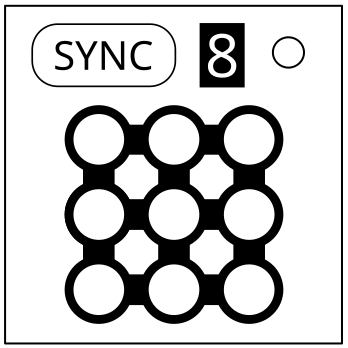

On the Subject of Sinking Singing Synchronization.
Homophones in a nutshell.
5 of 9 lights on the module will flash at different speeds rated 1–5, slowest to fastest. These are called light 1-5. The rest will be light 0 and will be left on. Synchronizing the flashing lights to each other and then to the bomb itself will disarm the module. Holding down the sync button for 2 seconds will revert the module back to its initial state.Step 1: Finding the syncing order.
Use the displayed number and light 5 position to find the starting cell on the table below.- If the center light is 0 or 1, skip this step.
- Otherwise, shift the cell on the table X times in the direction that light 1 is from the center light, where X is the speed rate of the center light. Wrap around the table if you need to.
Step 2: Syncing lights together.
The cell you landed on determines how you should sync the lights.Synced lights both have the same speed and are selected as a group. For example, syncing 1 → 2 becomes [12]
- Asc: 1 → 2, 3 → 4, [12] → [34], [1234] → 5.
- Des: 5 → 4, 3 → 2, [54] → [32], [5432] → 1.
- Opp: 5 → 1, 4 → 2, 3 → [51], [42] → [351].
Or 1 → 5, 2 → 4, 3 → [15], [24] → [315].
- “-” = Always sync lights in OFF state.
- “+” = Always sync lights in ON state.
- “Alt” = Sync lights in ON/OFF state alternatively each turn. WARNING: Do not sync different light states.
Step 3: Syncing with the bomb.
After you synced all the lights together, you need to press the button labeled “SYNC” when the number displayed is in the number of whole seconds on the timer.
| Sync Display | Position of Light 5 | ||||||||
|---|---|---|---|---|---|---|---|---|---|
| TL | TM | TR | MR | BR | BM | BL | ML | MM | |
| 1,2,3 | Des - | Asc - | Opp Alt | Asc Alt | Opp Alt | Asc - | Opp - | Opp - | Opp + |
| 4,5,6 | Asc + | Opp Alt | Des Alt | Des + | Des Alt | Des + | Asc - | Asc + | Asc Alt |
| 7,8,9 | Des - | Des Alt | Opp - | Opp + | Des + | Asc Alt | Asc + | Des - | Opp + |